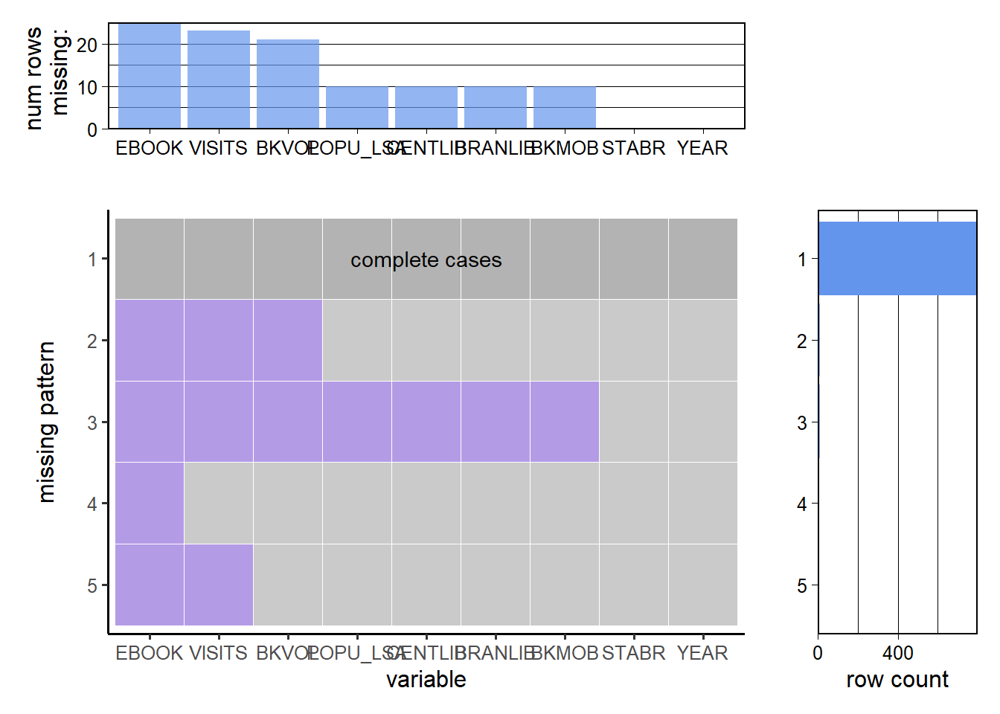
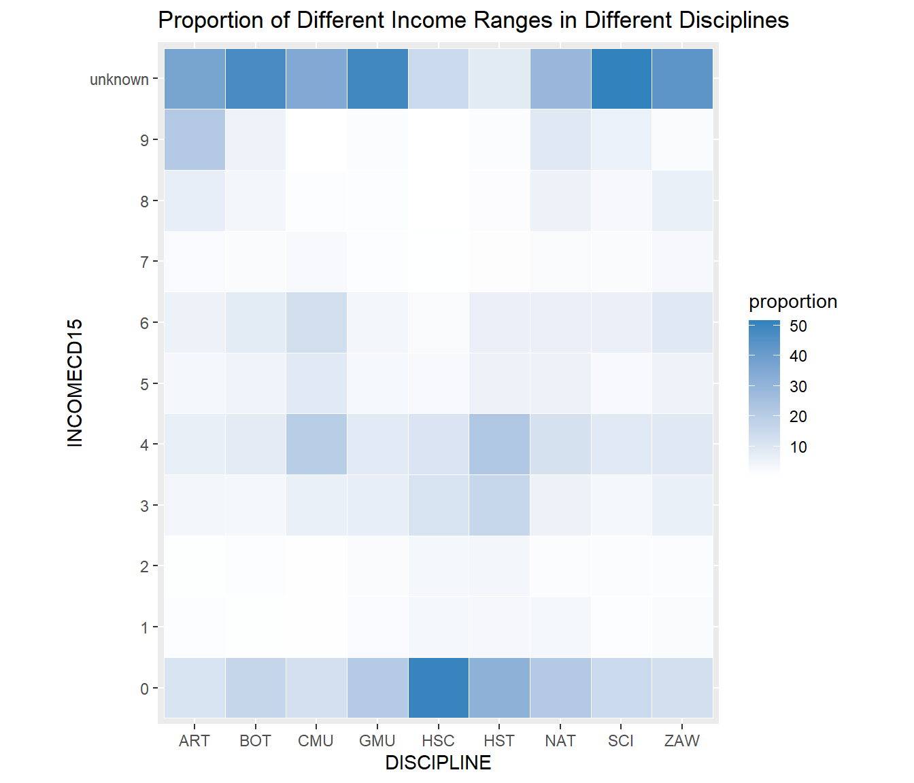
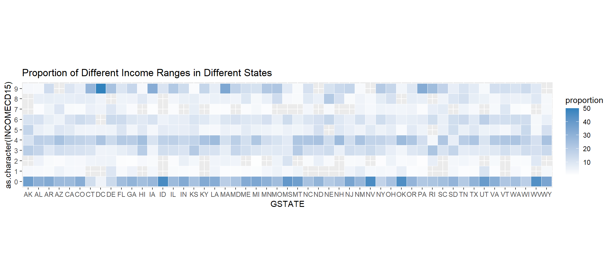
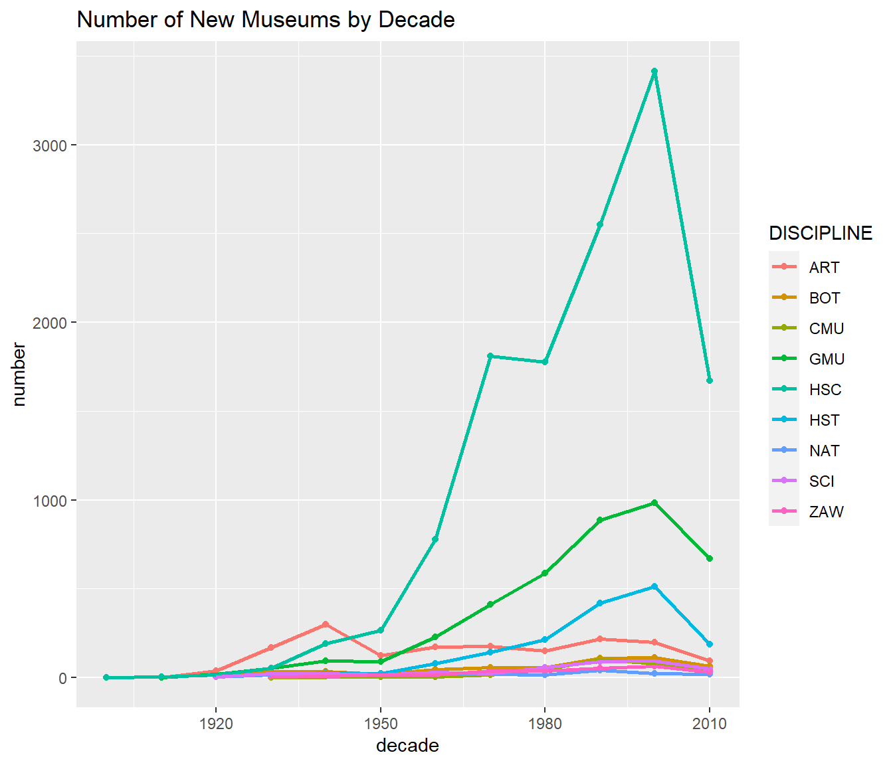
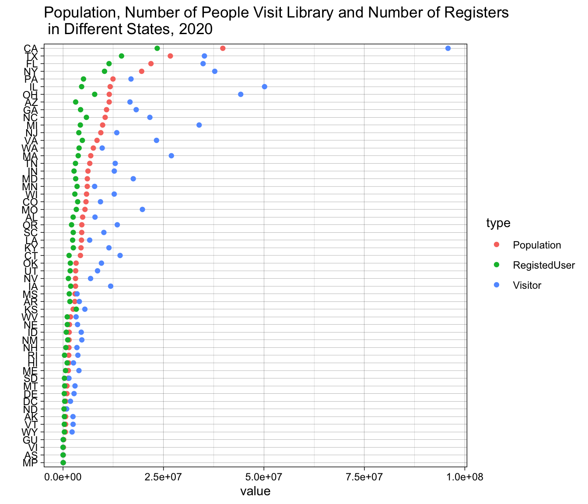
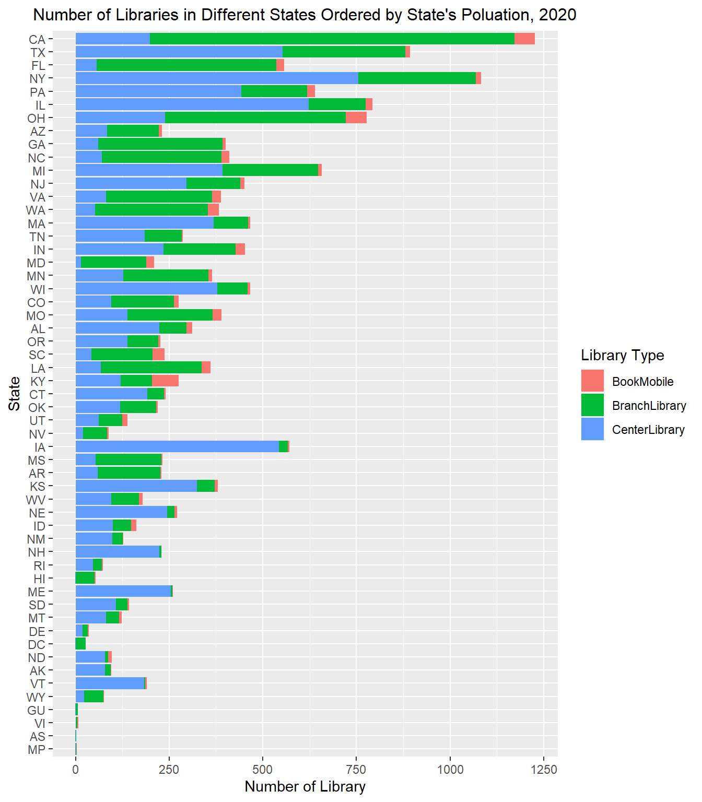
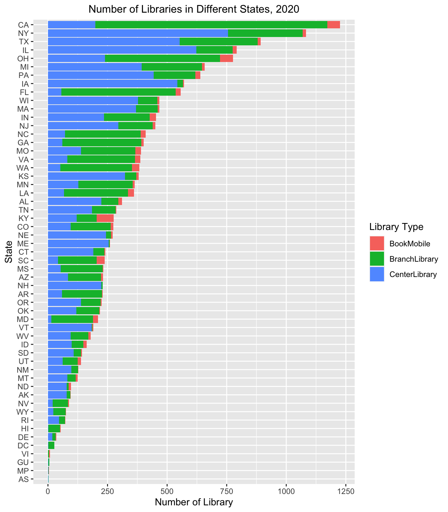

Chapter 4 Results
4.1 Library in US
4.1.1 Analysis of Library 2020
4.1.1.1 Population and visitors

We first analyze the population, number of people visit local library and number of register member of library in each state. The cleveland dot plot is ordered by the population of each state. As we can see from the graph, there is a overall trend of the state has large population tend to have more visitor and register to libraries in the state. In another word, there is a positive correlation between the population and the number of visitors. However, this is not graranteed as there are some state with large population having relatively small number of visitors like Texas and Florida.
4.1.1.2 Number of library

Then, we would like to analyze the number of library in each state. There are basically three kinds of libraries: center library, branch library and book mobile. We use a stacked bar chart to show the number of library in each state and the bars are ordered by the population of each state. As we can see, there is also a positive correlation between the population of each state and the number of library. However, this is not graranteed as there are some state with large population having relatively small number of library like Florida and Arizona.

In the following part, we are interested in other aspect of different state’s libraries which is more closely related to the number of library instead of the population. To better analyze the patterns of these variables, we make a stacked bar chart of the number of library in each state ordered by the total number of library. As we can see from the graph above, the proportion of different kind of libraries are different among different states. For example, California has a large proportion of branch libraries while New York has more proportion of main libraries. This shows that the structure of library systems of different states are different.
4.1.1.3 Collections of Libraries

There are several kinds of resource in each library: printed material, audio resource in physical format or digital format, video resource in physical format or digital format, ebook, state digital resource and other electronic resource. As the last two kinds are relatively small, we combine them together and set as a new group ‘other digital resource’.
The stacked bar chart is sorted by the number of library in each state. As we can see, there is a positive correlation between the number of library and the total resource owned by local library. However, there are also many outliers like Ohio and Kansas which own much more resource than expected. Further more, we can see from the graph that different state’s library’s resource pattern are different. Some of the state has more proportion of electronic resource while some of the libraries have more proportion of printed material.
4.1.1.4 Events Hold by Libraries

Most of the libraries hold reading event for readers. There are events for children, young adult and others. As we can see from the graph above, state with more number of library tend to have more reading event over state. Among all the events, most states’ library tend to have more program for children except New York and Florida.
4.1.1.5 Revenue

As we all know that most of the libraries are free for residents to visit and a large proportion of money are from revenue. There are four kinds of revenue that a library can have, which are revenue from federal government, state government, local government and others. We ordered the stacked bar chart in the order of number of libraries in a state. As we can see from the graph, the relationship between the number of library and total amount of revenue is relatively weak comparing with other characters we analyzed before. This shows that some of the states’ library receive more revenue than others. Most of states’ library receive more revenue from their local government while there are several state receive more revenue from other way. We can also see that New York, Massachusetts and Hawaii’s libraries receive relatively large amount of revenue from the state government which some how reflect the importance put on libraries or other entertainment and culture by the state.
4.1.1.6 Overall Analysis
We put all the variables we discussed together including the population, number of visitors, number of register, printed material resource, ebook resource, electronic resource, programs and revenue. We can see from the parallel coordinate graph that the relationship between each variable are basically positive correlated for most of the states and each variable has outliers.
California is outlier for all the variables regarding the number of people including the number of visitor, member of library. New York has biggest volume of books while Kansas and Ohio has really high number of ebook and Pennsylvania has highest number of other electronic resource. California and New York receive highest amount of revenue. As we can see from above, some of the state dominate more than one variable like California and New York while more than half of states have relative low value in all of the variables which shows a inequality development of library in different state.
As we can see from the spatial graph, the state with higher number of library are clustered on the east side of the country especially the north east region while the state in the west east have relatively low number of library.
4.1.2 Time Series Analysis
We also interested in the change of data during past 15 years as the world changed quickly with the development of internet and all kinds of entertainment in people’s life. Thus, we make a series of graph to show the change in number of library, number of people visit library annually, and the number of books and ebooks in library. As our data is annual data, we didn’t transform it into ‘date’ data type but keep it as integer.
4.1.2.1 Population change in past 15 years

First, we show that the population of each state has a slow but stable increasing trend during the past 15 years. Although the increment is not so big except several big state. The top five population dense states are California, Texas, Florida, New York and Pennsylvania. We didn’t show Florida and Pennsylvania in the graph with particular corresponding color as these two states don’t rank top in the other statistic value regarding library.
4.1.2.2 Number of Library change in past 15 years

Then, we compare the number of library in each state and we can see that most of states’ number of library didn’t change during the past 15 years.
4.1.2.3 Number of people visit library
After we known that the population didn’t decrease but indeed increased in most of states and the number of library didn’t change, we can see that the proportion of population decreased during the past 15 years. In other word, less people visit library during the past years which may partly due to people can search information more and more conveniently on cellphone or computer and have more ways to relax during their spare time. It is also very likely that people live better life now and they can afford buying their own copy of book instead of borrow one. However, comparing with the decrease in 2020, the decrease trend is much more subtle which means that there are still lots of people go to library before the pandemic. The covid-19 has more impact on whether people would like to or whether they can visit a library.
4.1.2.4 Printed material change during past 15 years

Then, we can see that the collection of books in some state’s library has a decreasing trend during the past 15 years which is especially clear in some of the state has large volume of books in the past. This is quite surprising outcome as it seems unlikely that people in the library throw away books.
4.1.2.5 Number of ebook change during past 15 years
On the contrary, we can see a quick increase in the collection of books in most of state’s library during the past 10 years. Ebook came out around 2010 and became more and more popular during the past years. There are several state ended with a really large number of collection of ebook which shows they put a lot of importance on this kind of resource provided to people. We can also specify that the state with relatively large collection of ebook are also those with large collection of printed materials which show that a state kind of support the development of library.